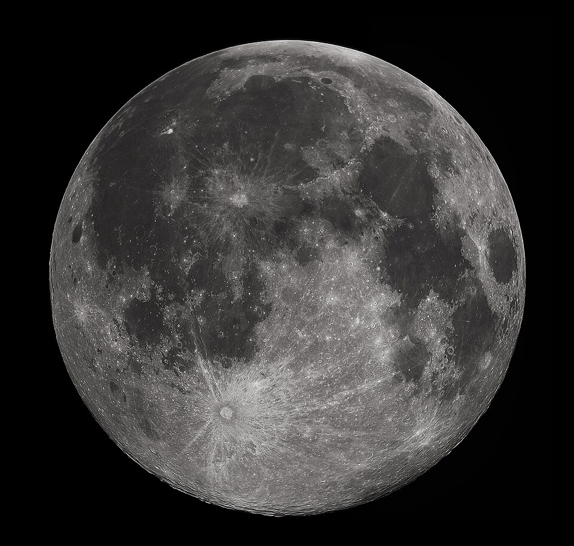
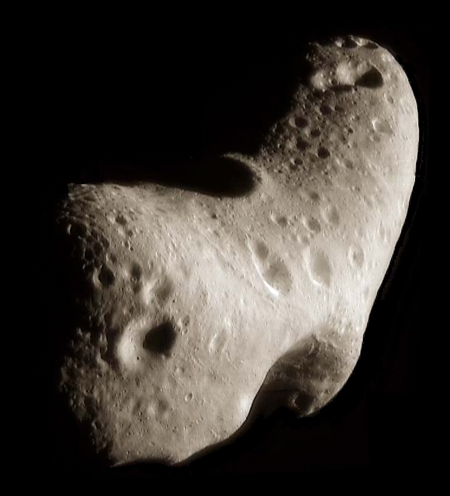

ASTRO-TRIAGE // DOSSIER DE MISIÓNNASA SPACE APPS 2026
DESAFÍO · MONITOREO DE SALUD PARA ASTRONAUTAS
ASTRO-TRIAGE
Copiloto de salud invisible: el astronauta no hace un examen — juega 60 segundos, y la nave evalúa su salud sola.
100% A BORDOSIN INTERNET18 PROTOCOLOS NASACERO FATIGA DE USO
60 spor sesión
8+señales pasivas
4niveles de alerta
0bytes fuera

ASTRO-TRIAGE // DOSSIERPÁG 01 / 15
SECCIÓN 01 // LA AMENAZACONTEXTO DE MISIÓN
El problema — el astronauta es su propio médico
≈ 20 min de silencio por trayecto
Una urgencia no espera 40 minutos de ida y vuelta. La decisión médica debe existir dentro de la nave.
Los 5 peligros del vuelo humano — Programa de Investigación Humana NASA
RADIACIÓN
Daño celular acumulado, riesgo cardiovascular.
AISLAMIENTO
Confinamiento meses → salud conductual.
DISTANCIA
Sin enlace en tiempo real → autonomía total.
GRAVEDAD
Pérdida ósea, equilibrio, reflejos.
CABINA
CO₂, ruido, monotonía → fatiga y sueño.
La paradoja del examen
TESTS TEDIOSOS
El PVT y los formularios se sienten como trámite — se posponen.
AUTO-DIAGNÓSTICO
Evaluar tu propia fatiga es difícil: la fatiga nubla el juicio.
LO QUE NO SE MIDE
Los problemas se descubren cuando ya son grandes — en el espacio, tarde es peligroso.
CONCLUSIÓN — el desafío no es solo medir la salud: es lograr que la tripulación se deje medir, todos los días, sin médico y sin fricción.
ASTRO-TRIAGE // DOSSIERPÁG 02 / 15
SECCIÓN 02 // EL INSIGHTPOR QUÉ UN JUEGO
La idea — esconder el examen dentro del juego
«El examen que se pospone no protege a nadie.»
PROBLEMA REAL
Los tests médicos diarios compiten con la fatiga, el aburrimiento y el orgullo del astronauta.
→
NUESTRO GIRO
Si el chequeo ES un juego de cartas de 60 s, la tripulación lo hace voluntariamente — cada día.
→
RESULTADO
Datos de salud capturados a diario, sin disciplina requerida. La constancia ES la cobertura.
Por qué funciona
SIN FRICCIÓN
Un botón: JUGAR. Sin formularios, sin consentimientos, sin “hoy me toca el examen”.
SIN ESTIGMA
Nadie siente que lo examinan — es un descanso, no una evaluación psicológica.
DATOS HONESTOS
Al no sentirse evaluado, el astronauta no “actúa” para la cámara: las señales son reales.
ADHERENCIA DIARIA
El juego da puntos y rachas — el hábito se mantiene solo durante la misión.
PRINCIPIO DE DISEÑO — la métrica más importante de un sistema de monitoreo es si la gente lo usa. Por eso la UI se diseñó primero como juego y después como instrumento médico.
ASTRO-TRIAGE // DOSSIERPÁG 03 / 15
SECCIÓN 03 // LA SOLUCIÓNARQUITECTURA DE LA EXPERIENCIA
Cómo funciona — tres piezas, un flujo
1 · JUEGO
Cartas de reacción, 60 s. Mide: latencia, lapsos, errores, consistencia.
Motor local + 18 protocolos. Entrega: color + acciones.
El flujo completo — automático de punta a punta
FASE 1Juego visible
El astronauta solo ve cartas, puntos y racha — una sesión normal de descanso.
FASE 2Captura invisible
Cámara y juego graban biometría en segundo plano — nada interrumpe la partida.
FASE 3Check-in de 3 toques
Ánimo, sueño y equipo — preguntas directas de un toque cada una.
FASE 4Veredicto solo
El motor cruza señales, consulta protocolos y presenta color + plan — sin que nadie pulse “generar”.
LO QUE EL USUARIO VE: un juego y un resultado. LO QUE EL SISTEMA HACE: un examen médico funcional completo.
ASTRO-TRIAGE // DOSSIERPÁG 04 / 15
SECCIÓN 04 // EXPERIENCIALO QUE VIVE EL ASTRONAUTA
Secuencia de misión — una sesión real, segundo a segundo
T+00:00Abre la consola
Los sensores se prepararon solos al cargar. El panel muestra solo: SEÑAL, marcador, y un botón — JUGAR.
T+00:03Opcional: un toque
Si le duele la cabeza, está mareado o con náusea — un toque lo registra. Si no, sigue.
T+00:05Pulsa JUGAR — arranca al instante
Aparecen las cartas. Regla: toca la carta igual a la SEÑAL, o ✕ NINGUNA si no hay.
T+00:05 → T+01:05La partida corre
Puntos, racha y errores visibles. En segundo plano: parpadeos, pulso, bostezos, rostro, mirada, latencias.
T+01:05Check-in automático
Tres preguntas directas: ¿cómo te sientes? ¿cómo dormiste? ¿cómo va el ánimo con el equipo?
T+01:10Análisis
Las señales se comparan con su línea base personal y se clasifican por severidad.
T+01:12Veredicto en pantalla
Color + hallazgos en lenguaje simple + 3 acciones con protocolos citados. Si hace falta: respiración 4-7-8.
TOTAL: ~70 segundos del día del astronauta. Cobertura: las 24 horas de salud que nadie más está mirando.
ASTRO-TRIAGE // DOSSIERPÁG 05 / 15
SECCIÓN 05 // EL JUEGOPVT DISFRAZADO DE CARTAS
El reto de reacción — por fuera juego, por dentro PVT
Señal
★
Tu turno — toca la carta igual, o ✕ ninguna
◆
●
☾
★
✕ NINGUNA
Qué mide en silencio
LATENCIA
ms por acierto → velocidad de procesamiento
LAPSOS
respuestas >500 ms → micro-distracciones
ERRORES
tasa de fallo → atención degradada
VS BASAL
% sobre tu propia media → deterioro personal
Es el equivalente funcional al Psychomotor Vigilance Task que la NASA usa en la ISS — sin que se sienta un examen.
Gamificación real — lo que engancha
PUNTOS
Cada acierto suma — feedback inmediato.
RACHA
Multiplicador por aciertos seguidos.
SÍMBOLOS
Temática espacial — se siente de la nave.
60 SEGUNDOS
Suficiente para medir, corto para no cansar.
ASTRO-TRIAGE // DOSSIERPÁG 06 / 15
SECCIÓN 06 // TELEMETRÍALO QUE LEE LA CÁMARA
Canal de sensores — visión pasiva, sin hardware extra
CAM · PARPADEO
frecuencia por minuto → alerta y fatiga
CAM · DURACIÓN
parpadeos largos → párpados pesados
CAM · PERCLOS
% de ojo medio cerrado → somnolencia real
CAM · BOSTEZOS
conteo por sesión → fatiga diurna
CAM · ASIMETRÍA
lados de la cara distintos → alerta neurológica
CAM · OREJA-EAR
asimetría de apertura ocular → segundo canal neuro
CAM · rPPG
pulso por cambios de color de la piel
CAM · HRV
variabilidad cardíaca → estrés / calma
CAM · MIRADA
% fuera de pantalla → desconexión
CAM · TENSIÓN
ceño fruncido sostenido → estrés o dolor
CAM · ESCLERA
enrojecimiento → fatiga visual
CAM · BALANCEO
micro-movimientos de cabeza → equilibrio

FIG · ANÁLISIS LOCAL — el video nunca sale del navegador ni de la nave.
SIN WEARABLES
Solo la cámara del equipo — nada que cargar, nada que olvidar ponerse.
MODO DEGRADADO
Sin cámara: el juego y las preguntas siguen midiendo. Sin nada: valores conservadores.
12 señales biomédicas capturadas mientras el astronauta cree que solo está jugando.
ASTRO-TRIAGE // DOSSIERPÁG 07 / 15
SECCIÓN 07 // CHECK-INLA VOZ DEL DÍA
Tres preguntas — salud mental en tres toques
¿CÓMO TE SIENTES HOY?
Con energía · Cansado · Muy bajo de ánimo
→ energía y moral general
¿CÓMO DORMISTE ANOCHE?
Bien, completo · Me desperté · Casi no dormí
→ deuda de sueño reportada
¿CÓMO VA TU ÁNIMO CON EL EQUIPO?
Bien, conectado · Algo distante · Aislado
→ aislamiento y burnout
Por qué solo tres
UN TOQUE CADA UNA
Cero escritura, cero fricción — contestadas en 5 segundos.
LENGUAJE DIRECTO
Sin jerga clínica — preguntas que cualquier tripulante entiende.
CRUZA CON SENSORES
“Me siento bien” + ojos que dicen lo contrario → el sistema lo nota.
Síntomas físicos — antes de jugar
Dolor de cabezaMareoNáuseaNada — me siento bien
Un toque, opcional. Los síntomas físicos reportados pesan directo en el triaje — especialmente cefalea + señal neurológica.
La salud conductual es un peligro oficial de la NASA — el aislamiento se detecta aquí, antes de que sea un problema de misión.
ASTRO-TRIAGE // DOSSIERPÁG 08 / 15
SECCIÓN 08 // MOTOR DE DECISIÓNCÓMO PIENSA
El pipeline de triaje — de señal a decisión
PASO 1Normalizar contra ti
Cada métrica se compara con tu línea base individual — no contra un promedio genérico. Estándar NASA de medicina operacional.
PASO 2Clasificar hallazgos
Cada señal anómala → hallazgo con severidad: aviso · precaución · alerta · crítico, y dominio: ojos, reflejos, corazón, neuro, mente…
PASO 3Detectar patrones
Las señales se cruzan: reflejos lentos + ánimo bajo + mal sueño = posible fatiga mental severa, no solo “un mal día”.
PASO 4Consultar protocolos
Búsqueda semántica local sobre 18 documentos NASA-STD-3001 / IMG / BHP — la acción citada es la correcta, no inventada.
PASO 5Escribir el veredicto
Color + hallazgos en palabras simples + máx. 3 acciones numeradas. Siempre declara: soporte de decisión, no diagnóstico.
Modo degradado — jamás en silencio
TODO OK
Cámara + juego + check-in → triaje completo.
SIN CÁMARA
Juego + check-in + síntomas → triaje con lo que hay.
MÍNIMO
Solo lo reportado → respuesta conservadora — nunca “sin datos”.
El motor es determinista primero (siempre responde) y opcionalmente usa un LLM local para narrar — en el espacio, la respuesta no puede depender de una API.
ASTRO-TRIAGE // DOSSIERPÁG 09 / 15
SECCIÓN 09 // EL VEREDICTOLO QUE RECIBE EL ASTRONAUTA
Lectura de instrumento — un color, tres pasos
NOMINALsigue el plan
VERDEvigilar
ÁMBARactuar hoy
ROJOemergencia
Ejemplo real — escenario ROJO del modo jurado
ROJO — EMERGENCIA A BORDOtriaje autónomo · RAG local
Hallazgos: asimetría facial nueva · reflejos lentos + ánimo bajo (fatiga mental severa) · cefalea reportada
DETÉN TODO. Examen FAST con otro tripulante y canal médico prioritario ahora.
Protege tu próxima ventana de sueño: 8 h bloqueadas, módulo oscuro.
Señal de falta de sueño: bloquea descanso de 8 h y evita cafeína previa.
⚠ Avisa a otro tripulante y abre canal médico ahora.
— IA local · no es diagnóstico médico · fuentes: NASA-STD-3001-4.2.1 / IMG-CHECKLIST-3.1
ASTRO-TRIAGE // DOSSIERPÁG 10 / 15
SECCIÓN 10 // CONOCIMIENTO18 PROTOCOLOS A BORDO
La biblioteca médica — evidencia, no intuición
NASA-STD-3001 — estándar de sistemas humanos de vuelo
4.2.1
Fatiga circadiana y deuda de sueño
4.2.4
Ralentización psicomotriz y vigilancia (estándar PVT)
4.3.2
Deshidratación y desequilibrio de electrolitos
4.4.3
Contramedidas de ejercicio y carga ARED
4.5.1
Intolerancia ortostática e inestabilidad vestibular
4.6.1
Fatiga visual y trabajo en pantalla
5.2.1
Higiene de sueño y ciclo vigilia-sueño
6.1.2
Monitoreo de radiación espacial
7.1.1
Exposición a dióxido de carbono (CO₂)
8.3.1
Evaluación cognitiva pasiva (contexto del sistema)
Checklists IMG — procedimientos de vuelo
IMG-3.1
Evaluación de evento neurológico agudo
IMG-5.4
Cefalea en vuelo espacial
IMG-2.3
Taquicardia y síntomas cardiovasculares
IMG-7.2
Malestar psicológico y carga de trabajo
IMG-8.1
Burnout y sobrecarga psicosocial de tripulación
IMG-9.1
Triaje rápido: convergencia de señales
BHP — salud conductual
BHP-2.1
Soporte psicológico en aislamiento
BHP-RES-4.7
Regulación autonómica: respiración 4-7-8 y grounding
Cada acción del veredicto cita su fuente — el astronauta puede verificar el porqué, como en un checklist de vuelo.
ASTRO-TRIAGE // DOSSIERPÁG 11 / 15
SECCIÓN 11 // TENDENCIA + CALMAMÁS ALLÁ DEL DÍA
Tu línea base — te compara contigo, no con nadie más
La NASA evalúa astronautas contra su propio historial — un pulso de 90 puede ser normal para uno y alarma para otro. El sistema guarda tu tendencia de 14 días:
FIG · 14 sesiones — verde: dentro de tu rango · ámbar: contramedidas activadas ese día.
Calma a pedido — micro-intervención cuando el estrés sube
4
INHALA
cuenta hasta 4 por la nariz
7
SOSTÉN
7 segundos de retención
8
EXHALA
vacía durante 8 segundos
Protocolo BHP-RES-4.7 — regulación autonómica validada. Se ofrece automáticamente cuando el veredicto detecta estrés, ansiedad o alerta ÁMBAR/ROJO.
El sistema no solo detecta — también actúa: contramedidas operativas, sueño protegido, respiración guiada, escalamiento médico.
ASTRO-TRIAGE // DOSSIERPÁG 12 / 15
SECCIÓN 12 // AUTONOMÍADISEÑADO PARA MARTE
Cien por cien a bordo — arquitectura de confianza
SIN ENLACE = SIN PROBLEMA
Todo el análisis corre local en la nave: visión, triaje, protocolos, narración. Internet nunca está en el camino crítico.
PRIVACIDAD MÉDICA
El video se procesa en el navegador y muere ahí. La salud mental del astronauta no se transmite ni se almacena fuera.
DETERMINISTA PRIMERO
El veredicto nace de reglas y protocolos — el LLM local solo lo narra mejor. Sin LLM, la respuesta es idéntica en contenido.
NUNCA EN SILENCIO
Cámara caída → decide con juego + check-in. Todo caído → valores conservadores. La tripulación siempre recibe respuesta.
STACK SOBREVIVIENTE
FastAPI + HTML/JS estándar — corre en cualquier computadora de a bordo, sin instalación compleja.
HONESTIDAD DE DISEÑO
Declara “soporte de decisión — no diagnóstico médico”: la misma filosofía que un checklist de vuelo.
FIG · BLUE MARBLE (NASA) — la Tierra sirve de fondo en la consola: el hogar al que esta herramienta ayuda a volver sano.
REGLA DE MISIÓN — en el espacio profundo, el software de salud debe funcionar como el oxígeno: siempre, solo, sin preguntar.
ASTRO-TRIAGE // DOSSIERPÁG 13 / 15
SECCIÓN 13 // CUMPLIMIENTOREQUISITO POR REQUISITO
Contra el desafío — checklist oficial NASA Space Apps
HERRAMIENTA VISUAL
Veredicto por color + hallazgos en lenguaje simple + plan numerado — lectura de un vistazo.
✓
ENTRADA: CÁMARA / CLICS / TEXTO
Cámara pasiva (12 señales) + juego de clics + check-in de 3 toques. Las tres usadas.
✓
INDICADORES DE SALUD
Pulso, sueño, reflejos, fatiga visual, ánimo, síntomas — todos los sugeridos por el desafío, más neuro y estrés.